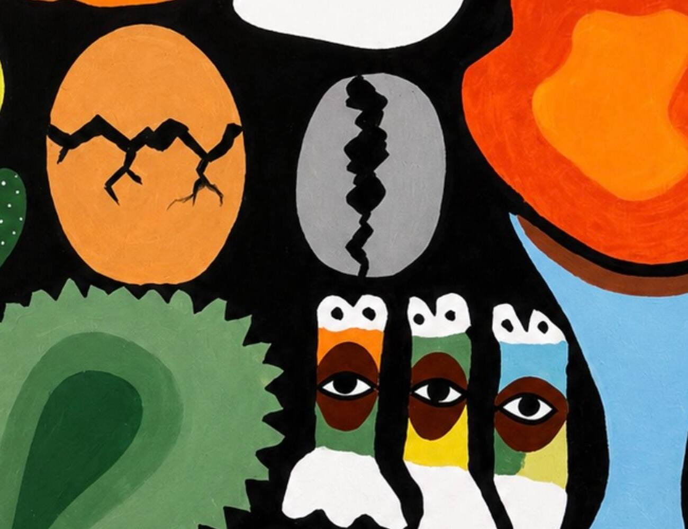

Every painting I make starts as a feeling I can't quite say out loud. With Rebirth, the feeling was simple: something in me had cracked open, and what came out was better than what broke. I wanted a title that could hold that in two languages, so the canvas carries both — Rebirth in English, and Atunbi in Yoruba, my mother tongue.
Why "Rebirth," Why "Atunbi"
Atunbi literally means "born again" — àtún (again) and bí (to be born). It's a word Yoruba people use plainly, in everyday speech, for anything that returns renewed: a season, a name, a person, a nation. I didn't want to translate the painting into English and lose that. So the work carries its Yoruba name first, and its English name second — a small insistence that where I'm from is not a footnote to what I make.
That's also the quiet argument of a lot of contemporary African art right now: heritage isn't a theme you visit, it's the language you already think in.
Reading the Symbols
I build my paintings the way I'd build a sentence — one symbolic form after another, each one doing its own work, all of them adding up to a single feeling. Rebirth is full of quiet objects that carry the weight of the whole piece. Three of them matter most.

Detail — the cracked egg, the cracked cowrie, and the three eyes, side by side at the centre of the canvas.
The cracked egg. An egg is the most patient symbol I know — it holds a whole life in stillness until the exact moment it doesn't. I painted the crack running through it the way a fault line runs through rock: not violent, just inevitable. That's the moment I mean by rebirth — not the calm before, not the chick after, but the second the shell gives way. New beginnings rarely look graceful while they're happening.
The cracked cowrie. Cowrie shells run deep through West African life — they were currency before paper money existed here, they're still used in Ifá divination, and they show up in beadwork, regalia and proverb. A cowrie in a painting is shorthand for value that has lasted. I cracked this one too, on purpose, next to the egg — heritage isn't a museum piece; it survives by being spent, worn down, passed on, and it's still worth something on the other side of that wear.
The three eyes. These are the part people ask about first. Three eyes, stacked in a row, painted into a single face made of white, brown and green. In a lot of West African visual traditions, an extra eye is never really about better eyesight — it's about a kind of seeing that isn't physical: insight, awareness, discernment, the sense that comes online after you've survived something. Multiplying the eye by three was my way of saying that enlightenment isn't a single flash — it's layered, it accumulates, you get it in installments.
Where This Sits in the Planet-B Universe
I paint under the name Ajayi VII, inside a larger body of work I call Planet-B — bold, flat colour, thick black outlines, and symbols pulled from Yoruba life stacked next to each other like a visual alphabet. Rebirth was painted in 2025, in the run-up to my first solo exhibition, Ipadabo, at the Nike Art Gallery in Abuja. It shares a wall, and a worldview, with pieces like "Only One" and "Freedom" — different subjects, same insistence that Nigerian symbolism belongs in the room, not just in the footnotes.
Acrylic on canvas, 36 × 48 inches, signed Ajayi vii in the corner. One canvas — no prints, no editions.
See "Rebirth" in Full
The painting is one-of-a-kind and currently for sale, housed at the Nike Art Gallery, Abuja.
I'll keep writing here about the symbols, the studio process, and the stories behind the Planet-B collection as it grows. If a piece speaks to you, or a symbol here reminds you of something from your own culture, I'd genuinely like to hear about it — write to me directly.